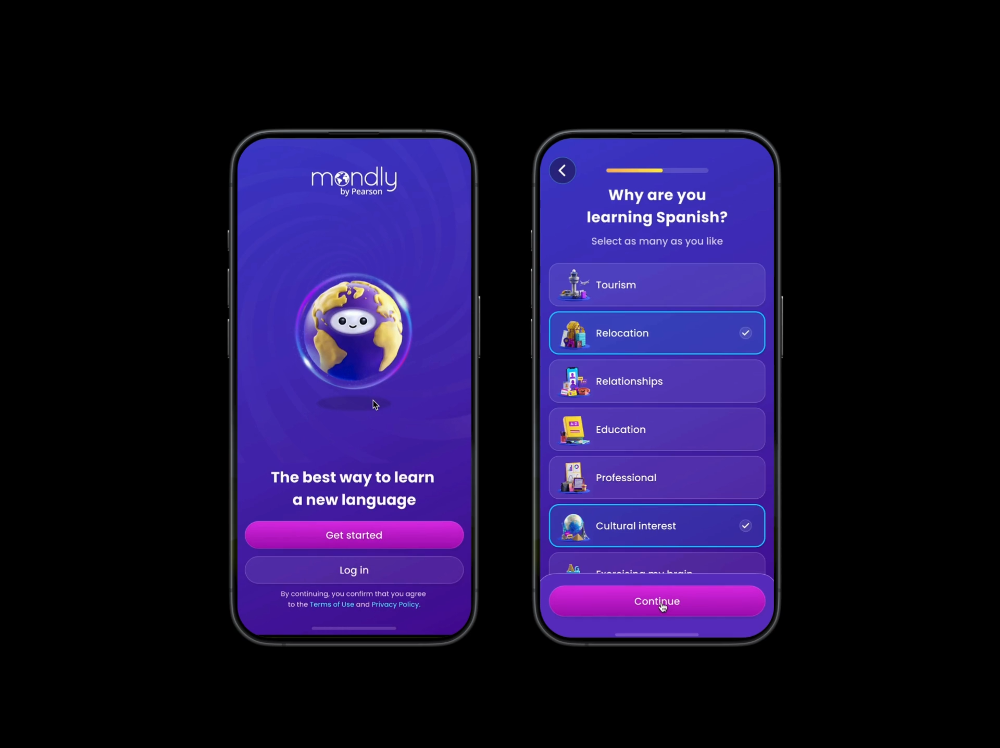

Pearson
Lead, Growth Experiences
Redesigned Mondly's onboarding flow to drive user activation and conversion, aligning product, design, and data teams around a clearer first-time user journey.
+18% increase in onboarding completion
Improved premium trial opt-in from 27% → 34%
